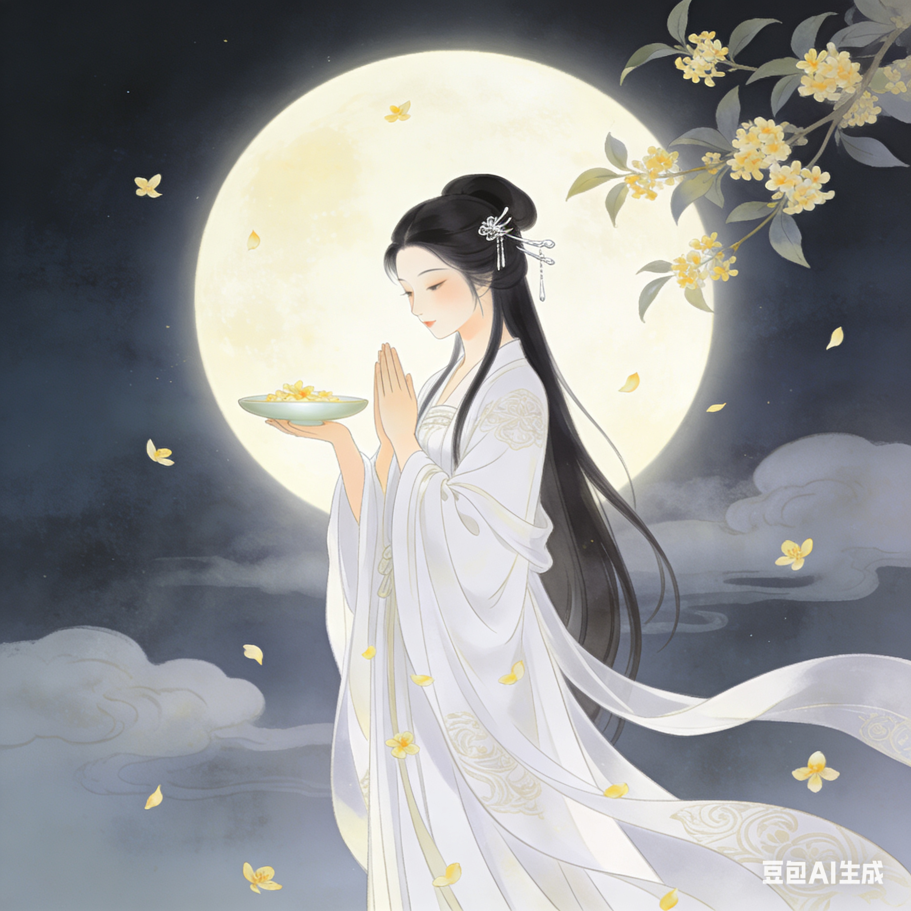

全国通用主流习俗

赏月 · 天涯共此时
中秋赏月是最核心的习俗之一，古人认为中秋月亮最圆最亮，象征着团圆美满，是人与自然的情感共鸣。
- 唐代起成为全民活动，文人墨客留下大量赏月诗词，如“但愿人长久，千里共婵娟”。
- 传统赏月地点多选高处（如城楼、山顶、湖边），讲究“赏月、赏桂、赏秋香”三者结合。
- 现代延伸：全家围坐阳台、公园野餐赏月，部分地区会举办“中秋赏月晚会”。

吃月饼 · 团圆的象征
月饼以其圆形寓意“团圆”，是中秋不可或缺的食品，承载着家人团聚的美好愿望。
- 食用讲究“分食”，全家一人一块，象征“团圆不分家”，不能独食或浪费。
- 传统月饼分广式、苏式、京式等，馅料有五仁、莲蓉、豆沙等，现代新增冰皮、流心等创新口味。
- 民俗寓意：月饼最初为祭月供品，后演变为“团圆饼”，赠送月饼是中秋重要的社交礼仪。

拜月 · 祈福纳祥
拜月是中秋最具仪式感的习俗，源于上古时期的月神崇拜，核心是祈求平安、团圆、丰收。
- 仪式流程：傍晚在庭院设供桌，摆放月饼、柚子、石榴、桂花酒等，月亮升起时焚香祭拜，行三叩礼。
- 性别讲究：传统“男不拜月，女不祭灶”，拜月多由女性主持，祈求容貌如月亮般皎洁，家庭和睦。
- 现代简化：部分地区保留供月仪式，去掉繁琐礼节，成为家人团聚的象征性行为。

猜灯谜 · 智慧的乐趣
中秋猜灯谜始于宋代，将谜语写在灯笼上，供人猜射，兼具娱乐性和知识性，是节日的欢乐点缀。
- 灯谜特点：谜面简洁巧妙，谜底多为成语、典故、生活用品，讲究“回互其辞，使昏迷也”。
- 活动场景：传统在灯笼夜市、寺庙广场举行，现代多见于家庭聚会、社区活动，猜对有小礼品。
- 文化意义：既锻炼思维，又增进亲友互动，是中秋“雅俗共赏”的习俗代表。
地域特色习俗
广东 · 拜月娘与耍禄仔
潮汕地区女性会设“月娘案”，供奉菱角、芋头、月饼等；儿童提着灯笼游街“耍禄仔”，祈求学业进步。
福建 · 博饼
厦门、泉州等地流行“博饼”游戏，用骰子投掷瓷碗，根据点数获得不同奖品，源于郑成功时期的军中娱乐。
江苏 · 走月亮
中秋之夜，男女老少结伴出游，沿着河边、湖畔赏月散步，俗称“走月亮”，寓意“走通月路，万事如意”。
湖南 · 放天灯
湘西地区会制作纸糊天灯，点燃灯内蜡烛，让其升空，寓意“放飞心愿，祈福平安”，场面十分壮观。
台湾 · 烤肉
台湾中秋流行全家烤肉，形成“中秋烤肉=团圆”的独特文化，街头巷尾弥漫烤肉香气，成为标志性习俗。
云南 · 跳月
彝族、白族等少数民族会在中秋之夜聚集在月光下，跳“阿细跳月”等传统舞蹈，对歌传情，庆祝丰收。
广西 · 抛绣球
壮族同胞中秋夜在月光下抛绣球、对山歌，未婚男女通过绣球传递情意，绣球上的刺绣图案寓意“吉祥如意”。
山西 · 献月与守夜
晋北地区会在庭院设供桌“献月”，供品必含苹果（寓意平安）、梨（寓意顺利）；部分家庭会守夜至午夜，祈求团圆长久。
习俗背后的小知识
月饼为何是圆形？
既对应中秋圆月，又象征“团圆”，同时古代祭祀讲究“以圆象天”，月饼作为供品自然取圆形。
供月为何用柚子？
柚子谐音“佑子”，寓意保佑子孙平安；且柚子外形圆润，果肉分瓣，象征“多子多福，家庭和睦”。
桂花与中秋的关联
桂花秋季盛开，香气浓郁，与中秋时间重合；桂花酒、桂花糕是中秋特色食品，象征“高洁、团圆”。
习俗小问答
传统中秋“男不拜月，女不祭灶”的原因是什么？
正确答案：B。传统观念中，月神是嫦娥等女性形象，男性拜月被认为“阴柔”；灶神是张单等男性形象，女性祭灶被认为“越界”，本质是古代性别角色的文化分工，现代已逐渐淡化这一禁忌。